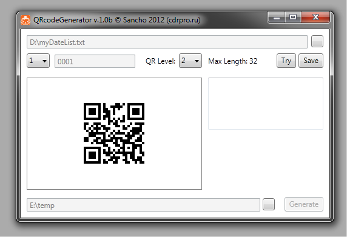

QR code и макрос CardGenerator
Sancho / 19.02.2012, 23:05/00:41
Форум:
В связи с ростом популярности QR code и отсутствием возможности генерации такового в CorelDRAW, я решил написать утилиту, которая будет генерировать этот самый QR code.
Утилита, скорее всего, будет работать отдельно от CorelDRAW. QR коды будут генерироваться в PNG файлы в заданную папку, из которой их потом сможет взять макрос CardGenerator и расставить как нужно.
Вот так выглядит самая первая тестовая версия:

Внешний вид точно изменится к релизу, т.к. нужно добавить ещё несколько элементов (например для выбора папки для QR кодов и файла с данными).
В общем, следите за новостями :)
I like it! "tumbs up"
гуд!
Замечательно! Скорей бы в дело!
Люблю макросы за автономность, а то приходится коды делать тут
vik1402, это не макрос.
На данный момент программа выглядит вот так:

С помощью неё можно генерировать как один код, так и целую кучу на основе текстового файла. Функцию сохранения я переписал, и теперь коды сохраняются в tiff (смик) файлы.
Хорошая новость для любителей халявы — программа будет бесплатна :) Когда доделаю — не знаю, так что как только так сразу :)
Выскажу своё мнение: -хорошая идея и хорошее исполнение... НО! тифчик должен быть в ч/б ! а не в СМИКе --исчезнут всякие огрехи при печати -- например при печати на фольге флексой (вполне возможно скоро так и будет -- например вместо состава продукта будет QR код) -- тогда и фото будут чоткие(для расшифровки фото ведь отсылается на спецсервис). Желательно добавить функцию выбора разрешения для тифа -72дпи для инета и 300(600 для ч/б)
ЗЫ. То что написал--дублирую в QR коде.... ))))))))
И ещё было бы гуд, если бы в векторе сохранять...
Програмка холявная, так что как напишу так и будет :)
Sancho приветствую. Есть ли разработки по печати в Corel как при "слиянии при печати" QR-кодов на основе переменной информации
Страницы